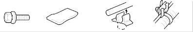
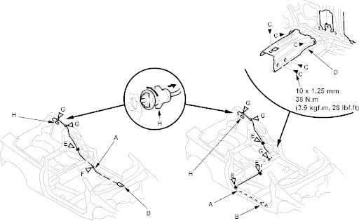

Openers
Fuel Fill Door Opener Cable Replacement
|
20-45 |
|
SRS components are located in this area. Review the SRS component locations (see page 23-24) and the precautions and procedures (see page 23-25) in the SRS section before performing repairs or service. Refer to the '01 Civic Shop Manual on this CD.
NOTE:
- Put on gloves to protect your hands.
- Take care not to scratch the body and related parts.
- Remove these items:
- Door sill trim (see page 20-29)
- Rear side trim panel, left side (see page 20-30)
- Pull the carpet back as necessary, refer to the '01 Civic Shop Manual on this CD (see page 20-212).
- Disconnect the fuel fill door opener cable (A) from the opener (B), refer to the '01 Civic Shop Manual on this CD (see step 3 on page 20-267).
Fastener Locations
C  : Bolt, 5 E
: Bolt, 5 E  : Cushion Tape F : Clip, 1 G : Clip, 2
: Cushion Tape F : Clip, 1 G : Clip, 2
LHD, 1 (LHD) LHD, 2
RHD, 3 RHD, 3

LHD: RHD:

- RHD: Remove the bolts (C), then remove the left middle floor cross-member gusset (D).
- Remove the cushion tape (E) and release the cable from the clips (F, G).
- Remove the fuel fill door latch (H) from the body by turning it 90°.
- Remove the fuel fill door opener cable from the vehicle. Take care not to bend the cable.
- Install the opener cable in the reverse order of removal and replace the cushion tape and replace the clip if it is damaged.